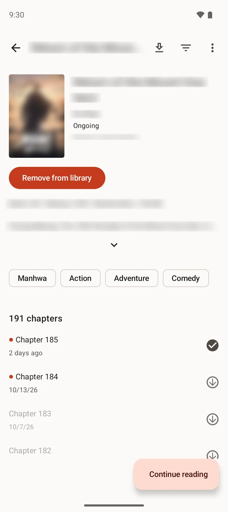
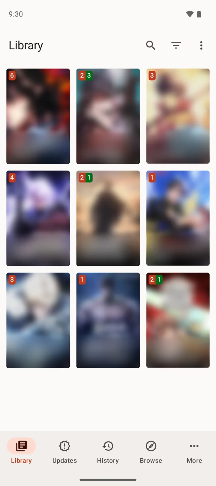
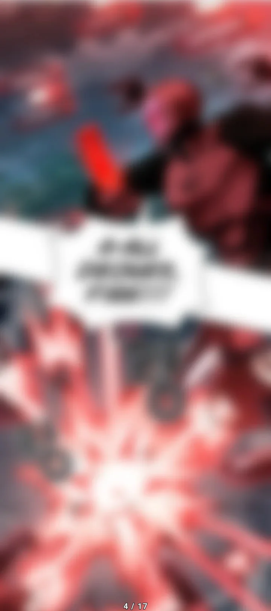
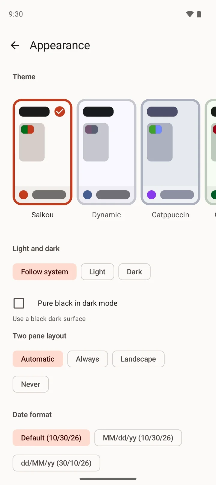
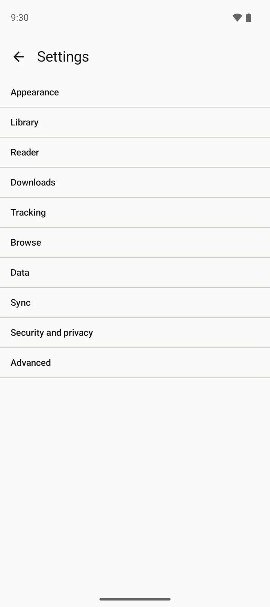

Free and open sourceAndroid 8.0 and laterNo account needed



Every device, one libraryGoogle Drive or WebDAV
Downloads that surviveBack after a reboot
No ads. No analytics.
Open source
No accountNo adsNo analyticsGoogle Drive syncWebDAV.tachibk backupsLong stripPaged readerDownloads that surviveMyAnimeListAniListMangaBakaComickTwo-pane tabletsApache-2.0
No accountNo adsNo analyticsGoogle Drive syncWebDAV.tachibk backupsLong stripPaged readerDownloads that surviveMyAnimeListAniListMangaBakaComickTwo-pane tabletsApache-2.0
Measured, not claimed
Fast where libraries get big.
Timed against Mihon v0.21.0 with the same 20,124-entry library on the same Android emulator. Every number is below, including the one Saikou loses.
6.2×6.2 times faster library update41.5 s against 255.3 s, for 2,000 entries across 20 sources
6.9×6.9 times faster Statistics screen0.20 s against 1.38 s
1.4×1.4 times faster cold start1.24 s against 1.78 s, straight to the library
87MB87 MB backup, restored in one go139.3 s in Saikou. Mihon runs out of memory before it starts.
Features
Built for the parts that usually break.
01 · Sync
Every device, one library.
Progress, bookmarks, categories and history merge field by field through your own Google Drive app folder or a WebDAV server you run. Nothing is deleted by absence, and there is no hosted service in the middle.
Paged and vertical modes, tall pages split before they reach the screen, a preload that works to a memory budget, and a pure black theme. Each title remembers its own mode.
The queue lives in the database and returns after a force-stop or reboot. Interrupted images resume mid-file. Chapters stay readable after they disappear from the website they came from, and each folder carries its cover and a ComicInfo.xml.
Saikou's own theme and named themes such as Catppuccin, light or dark, pure black for OLED screens, and two-pane layouts on tablets.

No account.No ads.No analytics.
There is no server behind Saikou and no telemetry in it. Your library stays on your device unless you turn on sync to storage you own, link a tracker, or share a bug report. The sites you read from, and GitHub for the update check, see your IP address, as with any web request.
Coming from a similar reader? Your .tachibk backup imports losslessly, with categories, progress, history and reader settings, and exports the same way.
.tachibk
Track what you read.
Link a title to MyAnimeList, AniList, MangaBaka or Comick, and each chapter you finish updates your list.
Categories, badges, filters and query search. Updates and History tabs, cancellable library updates with a per-title error list, and two-pane layouts on tablets.
Saikou bundles no content and no sources. It supports third-party extensions you choose to install, and fetches pages with your device as a browser would.
Open source.
The code is on GitHub under the Apache License 2.0, ready for other people to build on.
AppearanceThemes, light and dark, two-pane layouts.

SettingsEverything in plain groups.
Dark themeThe same library, after dark.
ChaptersRead, unread and downloaded at a glance.
Screenshots of Saikou 0.0.1 on Android, with popular titles from an extension installed for the purpose. Covers, pages, titles and descriptions are blurred in these screenshots; every series belongs to its creators and publishers.
How it compares
Measured, not claimed.
The same 20,124-entry library and the same steps, timed on the same Android emulator: Saikou 0.0.1 against Mihon v0.21.0, the reader most people come from. Lower is better everywhere, and the one place Saikou loses, storage, stays in.
Next to other readers
Feature
Saikou
Mihon
Komikku
TachiyomiSY
Mangayomi
Aidoku
Platforms
Android
Android
Android
Android
Android, iOS, Windows, macOS, Linux
iOS, iPadOS, macOS
Reads Tachiyomi extensions
Yes, lib 1.4 and 1.6
Yes
Yes
Yes
Yes, one of several engines
No, its own sources
Sync between devices
Built in: Google Drive or WebDAV
No
Google Drive, WebDAV or a SyncYomi server
Google Drive or a SyncYomi server
A self-hosted sync server
iCloud
License
Apache-2.0
Apache-2.0
Apache-2.0
Apache-2.0
Apache-2.0
GPL-3.0
Latest release
0.1.5, 2026-11-12
v0.21.3, 2026-10-25
v1.14.1, 2026-07-17
1.13.2, 2026-07-13
v0.9.9, 2026-10-12
v0.9-4, 2026-10-16
Features as each project documents them (checked 2026-09-10); licenses and releases read from each project's GitHub repository on 2026-10-30.
Optional sync with Google Drive.
Saikou can keep your devices in step by storing a copy of your library in your own Google Drive, inside the hidden app data folder that only Saikou can see. It asks Google for a single permission, drive.appdata, which gives it no access to any other file in your Drive. The data goes from your device to your Drive and nowhere else.
Free and open source, for Android 8.0 and later. Every release is published on GitHub, with notes. If you already keep a library in a similar reader, your backup comes with you.